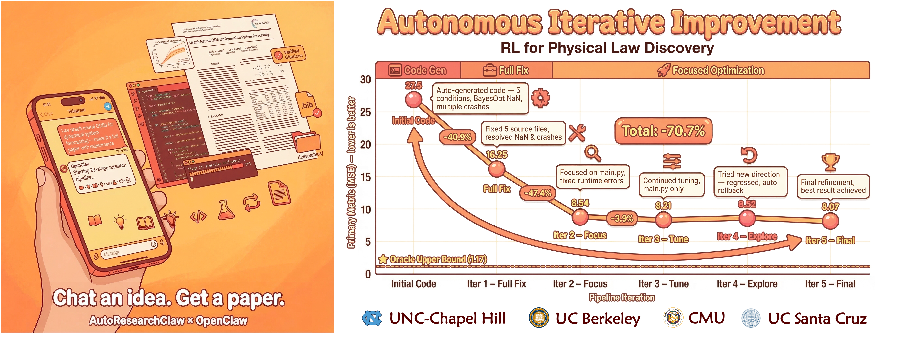

AutoResearchClaw is a 16-stage experiment toolbox. It follows the nearest workspace AGENTS.md while searching literature, reproducing baseline defects, designing methods, running experiments, and deciding whether the evidence supports a research claim.
Six phases create an auditable path from research scope to an evidence-based decision.
Topic initialization, problem decomposition, and scope definition.
Multi-source paper search via OpenAlex, Semantic Scholar, and arXiv with quality screening.
Synthesize algorithmic gaps, then reproduce the claimed baseline defect at a gate.
Methodology design, code generation, and resource planning with hardware awareness.
GPU-accelerated Docker sandbox execution with iterative refinement.
Result analysis with pivot/refine/proceed decisions.
Built for serious research, engineered for reliability.
Multi-source search across OpenAlex, Semantic Scholar, and arXiv with circuit breakers, rate limiting, and intelligent caching.
Experiments run in isolated Docker containers with NVIDIA GPU passthrough, network sandboxing, and automatic dependency management.
Every LLM prompt and nested stage workspace inherits the authoritative AGENTS.md, with source and digest recorded.
Automatic pivot/refine/proceed decisions with rollback to any previous stage based on experiment outcomes.
Literature screening, baseline-defect reproduction, and experiment design require explicit review.
Analysis and final decision artifacts distinguish supported claims, refinements, pivots, and negative results.
Historical outputs from the upstream paper pipeline; the active fork now stops at research decision.
Investigates adaptive curriculum strategies on CIFAR-10/100 benchmarks, demonstrating improved convergence speed and final accuracy compared to standard training.
Explores test-time adaptation methods using batch normalization statistics to handle distribution shift on CIFAR-10-C corruption benchmarks.
Proposes entropy-guided intrinsic reward bonuses to improve exploration in sparse-reward MuJoCo locomotion environments.
Experiment-toolbox architecture from topic input to evidence-based research decision.

Clone the repo, keep AGENTS.md current, configure your LLM, and run the toolbox one auditable stage at a time.